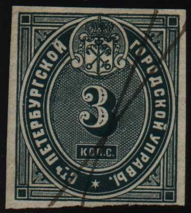
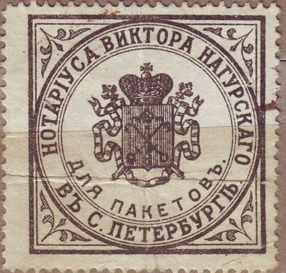
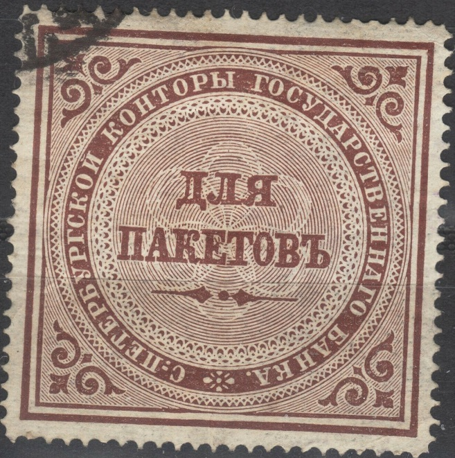

{kind=link}



Return To Catalogue - Russia Fiscal stamps, part 1 - Russia Fiscal stamps, part 2 - Russia overview
Note: on my website many of the
pictures can not be seen! They are of course present in the
catalogue;
contact me if you want to purchase the catalogue.
Russia Fiscal stamps, part 1
Russia Fiscal stamps, part 2

The following values exist (1865): 1 k black, 2 k brown, 3 k
green, 5 k blue, 10 k red, 15 k orange and black, 20 k green and
black, 25 k violet, 30 k blue and black, 40 k red and black. The
values 3 k, 5 k, 15 k, 30 k and 40 k exist perforated.
Another set with different inscription at the right hand side (PPH...) instead of (GOPO...)
in the values 1 k black, 2 k brown, 3 k green, 5 k blue, 15 k
orange, 25 k violet, 30 k blue and 40 k red. It was also issued
in 1865.
A similar design with arms in the center (1883) also exists in
the values 1 k black, 3 k green, 5 k blue, 15 k orange, 25 k
violet and 30 k blue (all imperforate, the 3 k and 15 k also
exist perforated, issued in 1900).

Similar design, issued in 1883: the following values exist: 1 k
black, 3 k green, 5 k blue, 15 k orange, 25 k violet and 30 k
blue. All stamps exists imperforate and the 3 k and 15 k also
perforated (1900).

Police stamp of 1860; issued in the values 1 k blue, 3 k green,
15 k yellow and 30 k red.

Hospital tax stamp for St.Petersburg, issued in 1889 in only one
value: 1 R red and grey
Fiscal stamp of St.Petersburg of 1890, consisting of two parts. A
similar stamp was issued in 1883 (10 k red as well). Yet another
design was issued in 1880 (10 k black on blue).

1878 issue, the values 10 k brown and 30 k green were issued.
Hospital tax, issued in 1886.
A revenue label fromm St.Petersburg, already printed on the
document.

